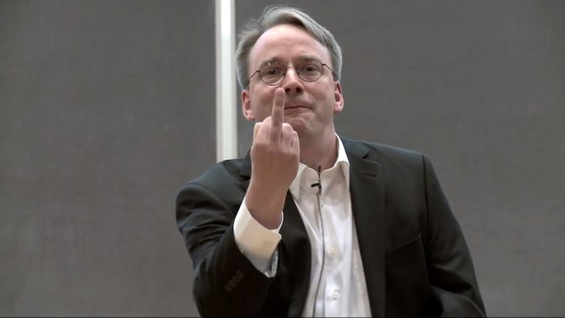

_(cropped).jpeg)
.jpg)
Carreira
Torvalds frequentou a Universidade de Helsínquia, entre 1988 e 1996,[7] obtendo um Mestrado em Ciência da Computação a partir do grupo de pesquisa NODES.[8] Sua carreira acadêmica foi interrompida após seu primeiro ano de estudo universitário, quando ele se juntou ao Exército da Finlândia. Lá, ocupa o posto de Segundo Tenente, com o papel de um oficial de cálculo balístico. Em 1990, retoma seus estudos universitários e é exposto ao sistema operacional Unix pela primeira vez, através de um computador DEC MicroVAX com o SO ULTRIX. Sua Dissertação de Mestrado intitula-se Linux: um sistema operacional portátil. Entrementes, em 1983, Richard Stallman cria a ideia do Sistema Operacional GNU, juntamente com a criação do Projeto GNU (que começou o seu desenvolvimento em janeiro de 1984). O Projeto GNU cresceu bastante a ponto de se fazer necessária a criação de uma fundação que desse apoio ao Projeto GNU, que se chamou Free Software Foundation (FSF), criada em 1985. Em 1986, Marice J. Bach publica Design of the Unix Operating System.
Em 1988, Linus foi admitido na Universidade de Helsinki. No mesmo ano, Andy Tanenbaum traz a público o SO MINIX, um derivativo do Unix para fins didáticos que rodava em computadores pessoais (PCs). No fim dos anos 1980, Linus toma contato com os PCs. Em 1990, Torvalds começa a aprender a linguagem de programação C em seus estudos. Em 1991, Linus compra um PC com um processador Intel 80386. Em 5 de janeiro de 1991, ele compra um Intel 80386-IBM PC antes de receber sua cópia MINIX, que, por sua vez, lhe permitiu começar a trabalhar no que se tornaria o Linux.

Com 21 anos, sendo cinco já de experiência em programação (em C), ele toma contato com o SO Unix da Universidade (SunOS, atualmente Solaris) e desejava usar a versão de Tannenbaum, o Minix, no seu recém adquirido 80386. Entretanto, descontente com os recursos do Minix, especialmente em relação ao seu emulador de terminal que ele utilizaria para conectar remotamente ao Unix da universidade, começa a desenvolver seu próprio emulador de terminal que não rodaria sobre o Minix, mas sim diretamente no hardware do PC com 80386. Esse projeto pessoal foi sendo modificado gradualmente e adquirindo características de um sistema operacional independente do Minix. Esse é o início do desenvolvimento do núcleo Linux, relatado pelo próprio Linus Torvalds em seu livro Just for fun. O projeto do Linux foi lançado em 1991 em uma famosa mensagem para a Usenet, em que ele divulga que estava disposto a disponibilizar o código-fonte e contar com a colaboração de outros programadores. Desde os primeiros dias de liberação do Linux à comunidade, ele recebe ajuda de hackers do Minix, e hoje recebe contribuições de milhares de programadores dos mais diversos locais do mundo.
Em 1997, Linus Torvalds recebe os prêmios "1997 Nokia Foundation Award'y" e "Lifetime Achievement Award at Uniforum Pictures". No mesmo ano, finaliza os estudos superiores (1988-1997), tendo passado 10 anos como estudante e pesquisador na Universidade de Helsínquia, coordenando o desenvolvimento do núcleo do sistema operacional desde 1992. Torvalds trabalhou na Transmeta (fabricante de processadores para portáteis) entre 1997 e 2003, e neste ano juntou-se à Open Source Development Labs (OSDL), fundação criada para ajudar no desenvolvimento do núcleo Linux, como OSDL fellow. Contribuem para essa fundação várias grandes empresas do ramo da informática, como IBM, Oracle e HP. Torvalds possui a marca registrada "Linux" e supervisiona[9] esse uso por meio da organização sem fins lucrativos Linux International, dirigida por Jon Hall.
Em entrevista a Embedded Linux Conference, Torvalds afirmou: "O Desktop realmente não abraçou completamente o mundo Linux ainda para usuários finais, mas hoje vemos muito mais empresas aderindo ao Linux para esta finalidade. Hoje vejo o desktop Linux tão desenvolvido quanto nunca. Em 25 anos, eu e meus colegas e todos os colaboradores conseguimos colocar o Linux em quase que literalmente todos os lugares, tenho pelo menos mais 25 anos para conquistar o Desktop e eu vou fazê-lo!".[10]